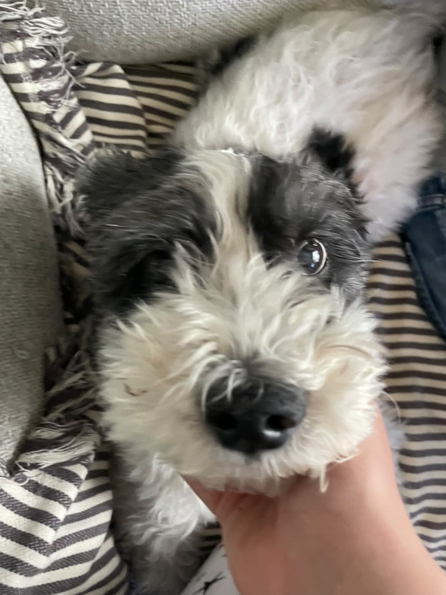

All my life I was surrounded by pets and animals. Cats are my favourite animals. My mom told me that the only reason why I love cats so much is because when I was still in my mom's stomach, her cat Taz would lie on her stomach and purr.

I currently have 3 pets: two cats and one dog,
₊˚ ✧ ‿︵‿୨୧‿︵‿ ✧ ₊˚This is batman, my little baby ❤︎₊ ⊹


isnt he cute?
Hes been with me since I was just a young girl. He's now 11 years old and still thriving, being clingy as always and purring loudly on his favourite purple bird blanket
This is Filo, the family dog!



puppy!
Filo is an old fart, he is 14 years old! For an old lost and lowkey deaf dog, he is very active and plays with his toys daily. He shakes his head aggressevly while he plays, maybe thats why he's silly.
This is Robin, my sister's cat


so cute
Batman is my cat, and Robin is my sister's cat. Regardless, robin is a very social cat that loves to cuddle with everyone. He is a chatty kitty with a big personality. I wish my sister would let me be when I pick him up.